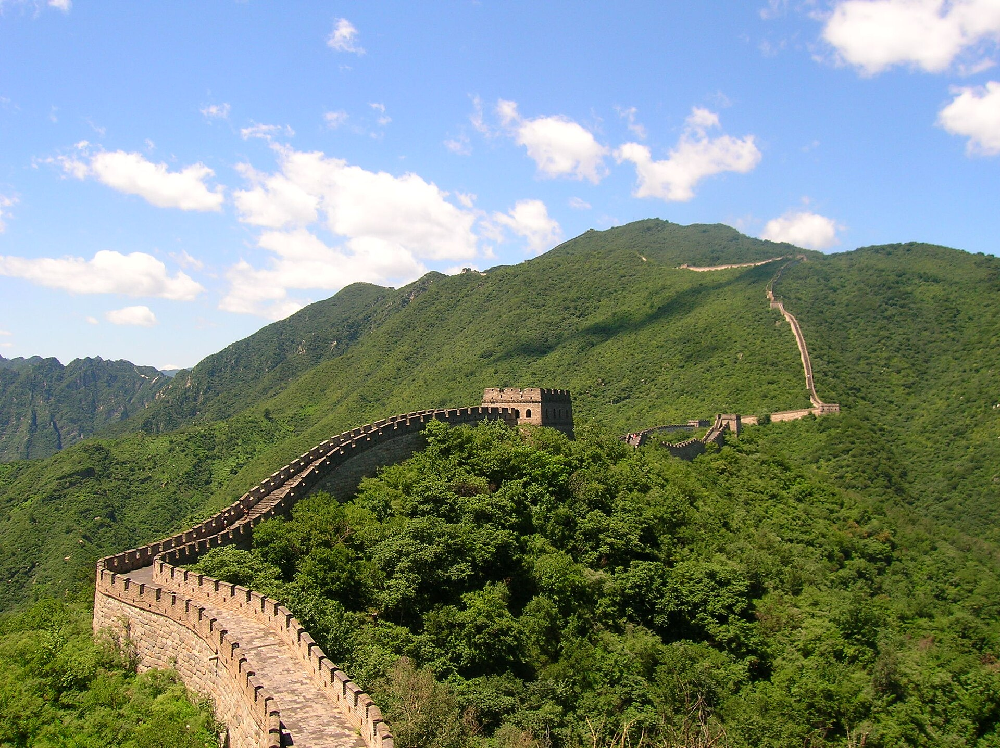
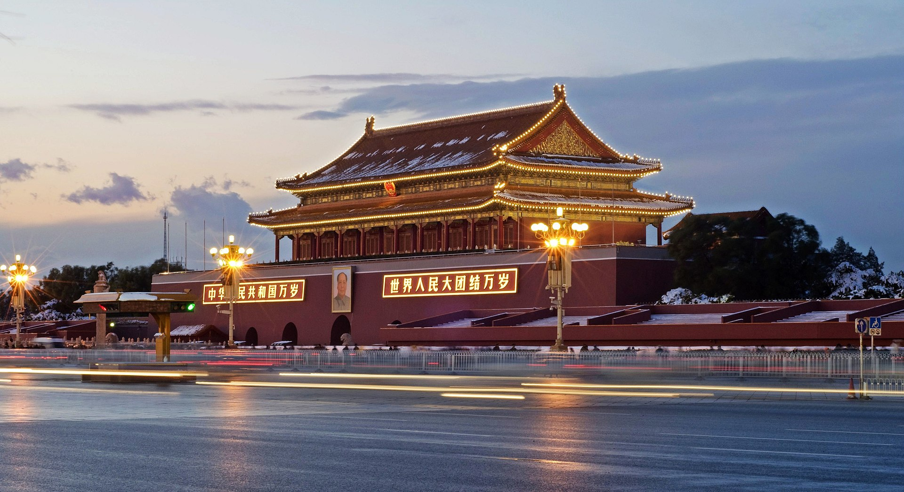
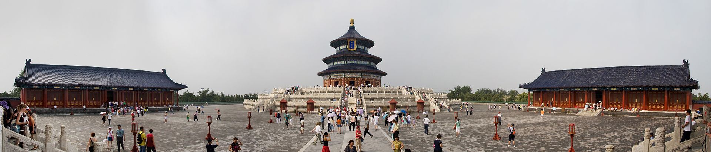
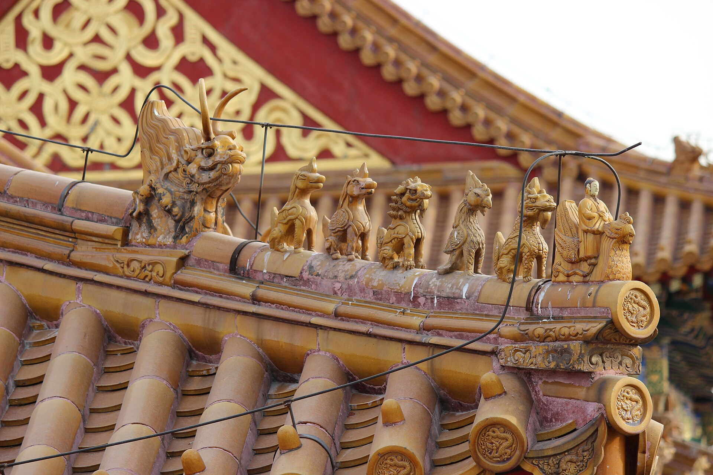
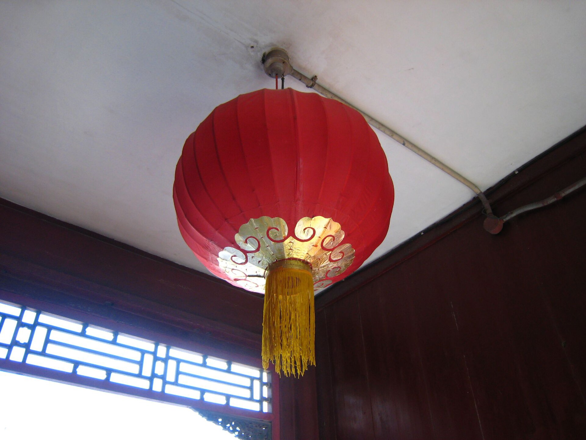
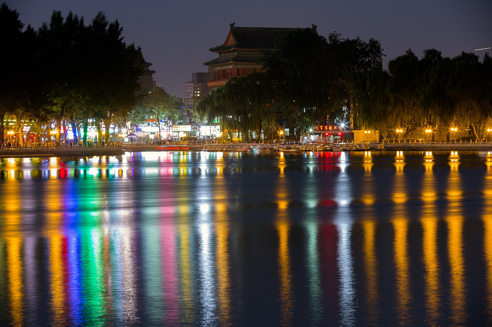
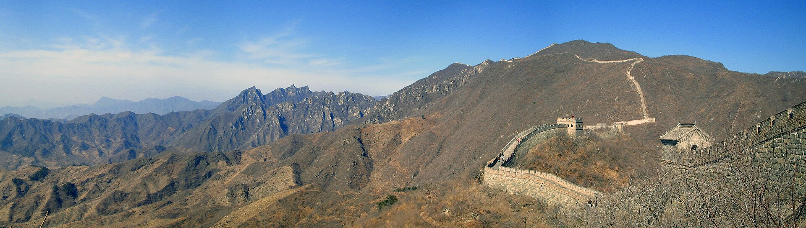
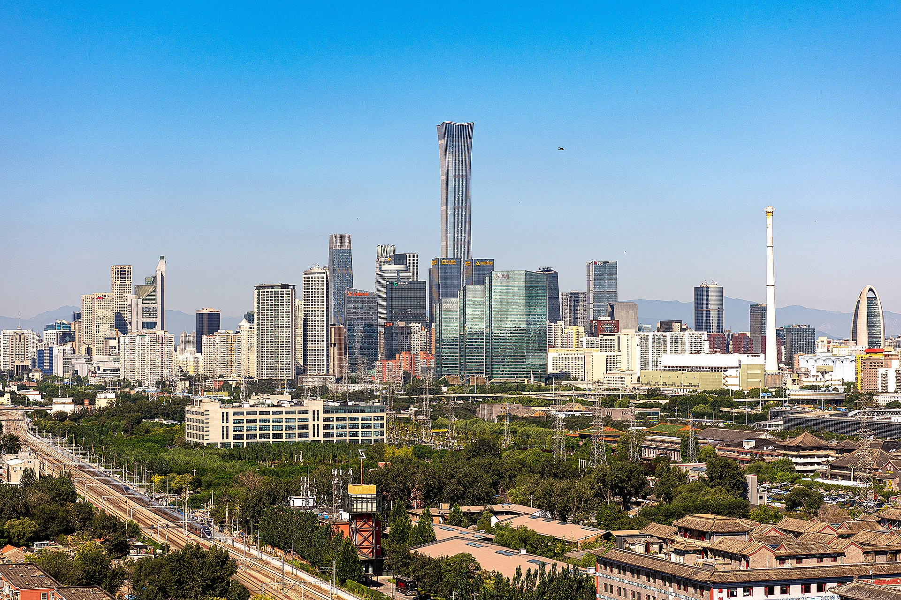

La Cité interdite
Cinq siècles d'histoire impériale, près de mille pièces et des toits d'or à perte de vue.
HETECH · Carnet de voyage
L'épanouissement d'un voyage, de la première fleur à la cité impériale.
Étape 1 — L'arrivée
Après des heures passées au-dessus des nuages, l'avion amorce sa descente vers la capitale chinoise. Par le hublot, Pékin se dévoile : un océan de toits gris, des avenues immenses et, au loin, la silhouette dorée de la Cité interdite. Bienvenue au cœur de l'Empire du Milieu.
Étape 2 — La découverte
Six lieux où se lit toute l'âme de la capitale, du faste impérial aux ruelles séculaires.
Cinq siècles d'histoire impériale, près de mille pièces et des toits d'or à perte de vue.

À une heure de Pékin, le serpent de pierre ondule sur les crêtes, jusqu'à l'horizon.

L'une des plus vastes places du monde, cœur battant et symbole de la nation.

Un chef-d'œuvre d'harmonie où les empereurs priaient pour de belles récoltes.

Ruelles séculaires et cours carrées : le Pékin authentique, à découvrir à vélo.
Jardins impériaux, lac de Kunming et galeries peintes : l'art de vivre à la cour.
En images





Composons ensemble votre séjour sur mesure à Pékin et au-delà.